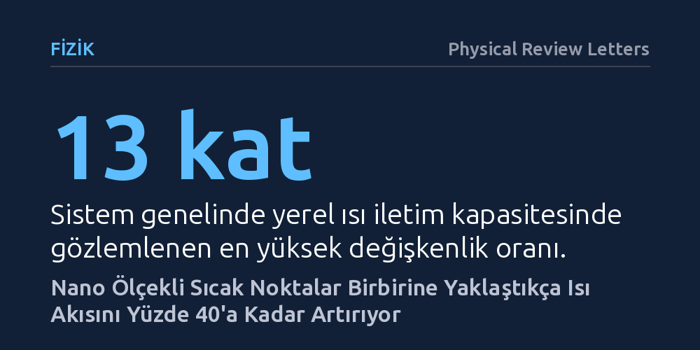

FIZIK · Physical Review Letters · 2026-10-12
Araştırmacılar, mikroçiplerdeki nano ölçekli çoklu sıcak noktaların ısıyı nasıl ilettiğini fonon Boltzmann taşıma denklemini çözerek modelledi. Birbirine yakın sıcak noktaların ısı akısını yüzde 40'a kadar artırdığı ve yerel iletkenliğin sistem içinde 13 kata kadar değiştiği bulundu.
Klasik fiziğin aksine, nano ölçekte sıcak noktaların birbirine yaklaşması ve yüzey saçılmaları ısı tahliyesini zorlaştırmak yerine bilakis kolaylaştırabiliyor.

Modern mikroçiplerde milyarlarca transistör birkaç milimetrekarelik alana sıkıştırıldığında, yoğun güç harcayan nanometre boyutunda küçük bölgeler oluşur. 'Sıcak nokta' (hotspot) olarak adlandırılan bu mikroskobik alanlar, cihazın aşırı ısınmasına, performansının düşmesine ve hatta fiziksel olarak zarar görmesine yol açabilir. Çiplerin güvenle çalışabilmesi için üretilen bu yüksek ısının hızla uzaklaştırılması kritik bir mühendislik sorunudur.
Ancak boyutlar nanometre ölçeğine indiğinde, yüzyıllardır kullanılan klasik Fourier ısı iletim yasası yetersiz kalır. Klasik fizik, ısının ortamda sürekli ve tekdüze bir biçimde yayıldığını varsayar. Oysa nano ölçekte ortam bir bütün gibi davranmaz; ısının yayılımı atomik ölçekteki dalgaların hareketine bağlı hale gelir. Mühendislerin bugüne kadar kullandığı basitleştirilmiş modeller, birbirine çok yakın birden fazla sıcak noktanın birbirini ve ortamı nasıl etkilediğini açıklamakta yetersiz kalıyordu.
Araştırmacılar bu bilinmezliği aydınlatmak için fiziksel bir çip deneyi yerine kuramsal fiziğin temel araçlarından biri olan fonon Boltzmann taşıma denklemini çözdü. Katı maddelerde ısı, atomların titreşimiyle yani 'fonon' adı verilen parçacık benzeri dalga paketleriyle taşınır. Sıcak noktalar fononların serbestçe hareket ettiği mesafeler kadar küçüldüğünde, ısı artık klasik anlamda yayılmaz; bilardo topları gibi doğrudan saçılır ve balistik davranışlar gösterir.
Çalışmada, nano ölçekli ısı transferine uygulanan geleneksel 'kara kutu' yaklaşımının eksiklerini gidermek amacıyla yeni bir yerel ısıl iletkenlik modeli önerildi. Bu matematiksel çerçeve, ısının klasik yayınım kurallarına uymadığı nano ölçekli rejimleri kapsayacak şekilde genişletildi ve çoklu sıcak noktaların oluşturduğu sıcaklık dağılımı ayrıntılı simülasyonlarla hesaplandı.
Simülasyon sonuçları, nano ölçekteki ısıl davranışın klasik beklentilerden çok farklı olduğunu ortaya koydu. Sistem boyunca yerel ısı iletim kapasitesinin homojen olmadığı, aksine farklı bölgeler arasında tam 13 kata kadar değişkenlik gösterdiği belirlendi. Dahası, ısı akısının yönü de klasik Fourier yasasının öngördüğü sıcaklık eğiminden belirgin şekilde saptı; ısı alışılageldik doğrultulardan farklı açılara doğru büküldü.
En dikkat çekici bulgu ise sıcak noktalar arasındaki mesafe daraldığında ortaya çıktı. Birbirine yakın konumlandırılan nano sıcak noktaların ısı akısını yüzde 40'a kadar artırdığı tespit edildi. Klasik mantık sınır saçılmalarının ısı akışını engelleyeceğini öngörürken, model bu dar aralıklardaki yayınık sınır saçılmasının ısı taşınımını engellemek yerine bilakis desteklediğini gösterdi.
Bu bulgular, yüksek güç yoğunluğuna sahip tümleşik devrelerin termal yönetiminde uzun süredir kullanılan basitleştirilmiş varsayımların gözden geçirilmesi gerektiğini gösteriyor. Geleceğin işlemcilerinde transistörlerin yerleşimi planlanırken, sıcak noktaların birbirine yakınlığının ısıyı hapsetmek yerine belirli koşullarda tahliyeyi hızlandırabileceği gerçeği hesaba katılabilir.
Yine de bu sonuçların bilgisayar destekli kuramsal bir simülasyona dayandığı unutulmamalıdır. Modelin öngördüğü yüzde 40'lık ısı akısı artışının ve yerel iletkenlik değişimlerinin gerçek silikon yongalar üzerinde çalışan fiziksel devrelerde de deneysel olarak doğrulanması gerekmektedir.